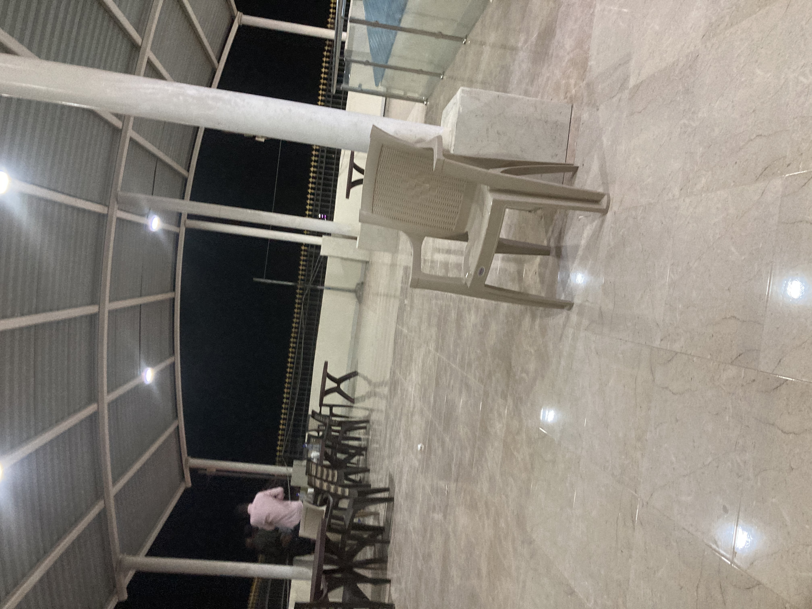
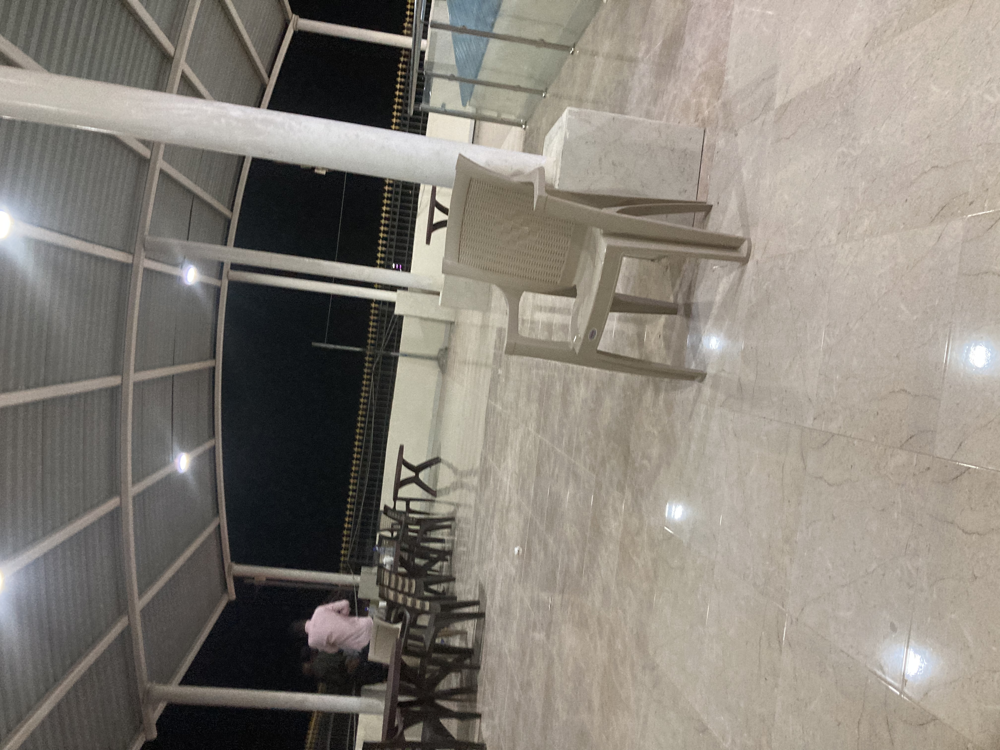

San Francisco, California


Geographical Location: North America
Photo Gallery

Alcatraz Island I visited Alcatraz Prison

Lombard Street

The Painted Ladies

Hill in San Francisco

The Palace of Fine Arts in San Francisco
Yellowstone


Geographical Location: North America
Yellowstone is the first national park in the United States. It covers over 2.2 million acres, and provides an opportunity to see wildlife and explore geothermal areas. In fact, Yellowstone contains about half the world's active geysers.
These unique opportunities also bring out a lot of bad decisions among the tourists. Every year visitors injure themselves or the wildlife by getting close to the animals. You can see examples of people making bad decisions by visiting Yellowstone National Park: Invasion of the Idiots, Tourons of Yellowstone, or Cowboy State Daily.
Photo Gallery


Qatar And Somalia
 


Geographical Location: Qatar-Somalia are in West Asia, East Africa
Qatar and Somalia are two countries I visited over the summer. I explored the cities for each one for two months.
Somalia is situated in the Horn of Africa on the eastern side of the continent. Its geological features are diverse and include mountain ranges, plateaus, and low-lying coastal plains.
Qatar is a small peninsula located in the Middle East, specifically in the Persian Gulf. Geologically, it is primarily a desert region with flat, arid landscapes dominated by sand dunes and rocky desert terrain. The country is known for its extensive coastlines along the Persian Gulf, which feature salt flats and mangrove swamps.
Photo Gallery

Giza, Egypt


Geographical Location: Africa
Giza is located on the western bank of the Nile River, and it is a historically and culturally significant city in Egypt. It is home to the Great Pyramids and the Sphinx, which are ancient wonders of the world. These monuments also raise many questions about how advanced the ancient Egyptians truly were. Giza has recently become a bustling city full of tourists and adventurers seeking to see the ancient lure of Egypt.
Giza is a city that is very unique for a lot of reasons. One reason why is the ability to be a vibrant city that also is able to blend in its vast historical heritage within its city life. On one side you can see the pyramids, and on the other you can see the bustling nightlife of Egypt. This city is also very close by to the capital of Egypt, which allows tourists to not only visit Giza, but they also gain the opportunity of going to the nearby capital and getting any work needed done.
Photo Gallery